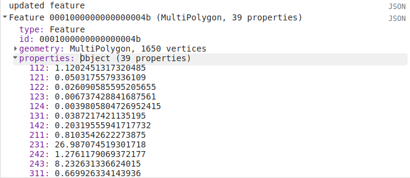

zonal statistics
Contents
zonal statistics#
In GIS, zonal statistics is a process whereby you calculate statistics for the pixels of a raster in different groups, or zones, defined by properties in another dataset.
In this tutorial, we’ll use the Global Administrative Unit Layers 2015, along with the Copernicus CORINE Land Cover dataset, to see how we can perform zonal statistics in GEE on both Feature and FeatureCollection datasets.
By the end of this tutorial, you should be able to:
display vector data in GEE by converting it to an image
select an item from an ImageCollection using the item’s index
use
ui.Chart.image.byClass()to summarize and display image datause “currying” to re-write a function with multiple arguments into multiple functions of a single argument
displaying vector data#
When you open the script, you should see two imports: the GAUL level 1 FeatureCollection, and the CORINE Land Cover ImageCollection.
The first line of the script selects all Features where ADM0_NAME is equal to Ireland:
var country = countries.filter(ee.Filter.eq('ADM0_NAME', 'Ireland'));
This provides us with a FeatureCollection of all of the Counties of Ireland.
We then add this to the Map using Map.addLayer():
Map.addLayer(country, {}, 'Administrative Boundaries', false);
The options for displaying vector data on the Map are quite limited, though – we can’t actually set display properties in the same way that we can for Image data:
{kind=link}
If we want to display vector data using different colors, we have to use ee.FeatureCollection.reduceToImage()
(documentation):
var countryImg = country.reduceToImage({
properties: ['ADM1_CODE'],
reducer: ee.Reducer.first()
});
This will convert the FeatureCollection vectors to an Image, where the pixel values are equal to the specified properties
reduced using the specified reducer.
Here, the image will have values corresponding to the ADM1_CODE, the GAUL code for the first-level administrative units.
When adding the Image to the Map, we can also use ee.Image.randomVisualizer()
(documentation)
to provide a random palette to display the image as:
Map.addLayer(countryImg.randomVisualizer(), {}, 'Regions', false);

selecting from collections#
The corine import is an ImageCollection, containing 5 separate images: 1990, 2000, 2006, 2012, and 2018.
We want to use the 2018 dataset, which means that we need to select the 5th image from the ImageCollection:
var landcover2018 = ee.Image(corine.toList(1000).get(4)).clipToCollection(country);
This uses ee.ImageCollection.toList() (documentation)
to convert the ImageCollection to a List – note that when calling ee.ImageCollection.toList(),
you need to specify the count of the List – the maximum number of elements to fetch.
We then use ee.List.get() (documentation) to
grab the 5th element (remember: indices start counting from 0!) from the List, corresponding to the 2018
dataset.
Note
We could also use a negative index to start counting from the end of the list - so, ee.List.get(-1) would return
the last element from the list, ee.List.get(-2) would return the second-last, and so on.
Because of the way that fetching items from lists works in GEE, the output of ee.List.get() is an ambiguous
object type. This means that we have to cast the output of ee.List.get() as an Image, using
ee.Image() - otherwise, we won’t be able to treat this as an Image (meaning we can’t use the Image object
methods).
Finally, we clip the Image to the country boundaries, using ee.Image.clipToCollection()
(documentation).
The CORINE dataset has a built-in palette, which means that when we add the Image to the Map:
Map.addLayer(landcover2018, {}, '2018 Corine Landcover', false);
it already has a color palette:
{kind=link}
chart by class#
To display a chart showing the percent area that each landcover class occupies in a single county, Donegal
(recently voted the best county in Ireland),
we first filter the country FeatureCollection to select the Features where the ADM1_NAME
is Donegal, then use ee.FeatureCollection.first()
(documentation)
to select a single Feature (because ee.FeatureCollection.filter() returns a FeatureCollection):
var region = ee.Feature(country.filter(ee.Filter.eq('ADM1_NAME', 'Donegal')).first());
We then use ui.Chart.image.byClass() (documentation)
to create a Chart object that summarizes the landcover values within the selected county:
var classChart = ui.Chart.image.byClass({
image: ee.Image.pixelArea().divide(region.area()).multiply(100)
.addBands(landcover2018.clip(region)),
classBand: 'landcover',
region: region,
scale: 100,
reducer: ee.Reducer.sum()
}).setOptions({
title: 'Landcover Pct Area',
hAxis: {
title: 'CORINE landcover class',
titleTextStyle: {italic: false, bold: true},
},
vAxis: {
title: 'percent area',
titeTextStyle: {italic: false, bold: true},
viewWindow: {min: 0, max: 40}
}
});
This part of the above code:
ee.Image.pixelArea().divide(region.area()).multiply(100).addBands(landcover2018.clip(region))
Uses ee.Image.pixelArea() (documentation),
ee.Image.divide() to divide the pixel area by the total area of the region, and
ee.Image.multiply() to multiply this to 100, so that the results represent the percent of the entire
region that each landcover class takes up.
Finally, we use ee.Image.addBands() (documentation)
to add the landcover Image to this one.
ui.Chart.image.byClass() then uses the specified classBand to group pixels in the other bands and apply
the specified Reducer (here, ee.Reducer.sum() (documentation),
to return the sum of all of the pixel areas for each class).
We also specify the geometry to use (our selected county), and the scale of the Image to use (100 m, the resolution of
the CORINE dataset).
Similar to what we’ve done before, we use ui.Chart.setOptions() to provide labels for the Chart, before using print()
to display the chart:
{kind=link}
Note
For information about what classes each value corresponds to, you can check the landcover class table in the GEE Data Catalog.
summarizing over a feature#
This is one way to summarize the information, but we might also want to add these properties to the Feature, so that we can export the data for later analysis.
To do this, we’ll write a function that takes a Feature and an Image as inputs, and returns a Feature
with the percent area for each landcover value added as a property.
The full function is shown here, but we’ll walk through each part in turn:
function summarizeLandcover(region, img){
var areas = ee.Image.pixelArea().addBands(img).clip(region)
.reduceRegion({
reducer: ee.Reducer.sum().group({
groupField: 1,
groupName: 'landcover'
}),
geometry: region.geometry(),
scale: 100,
crs: img.projection(),
maxPixels: 1e13
});
// get the landcover values, converted to a string
var landcovers = ee.List(areas.get('groups')).map(function(item){
return ee.String(ee.Dictionary(item).get('landcover'));
});
// get the area values, converted to percent area
var normAreas = ee.List(areas.get('groups')).map(function(item){
return ee.Number(ee.Dictionary(item).get('sum'))
.divide(ee.Number(region.area())).multiply(100);
});
// return a dictionary of (class, area) key value pairs
var properties = ee.Dictionary(landcovers.zip(normAreas).flatten());
return region.set(properties);
}
The first part of the function creates a new variable called areas, which is the output of
ee.Image.reduceRegion() (documentation):
var areas = ee.Image.pixelArea().addBands(img).clip(region)
.reduceRegion({
reducer: ee.Reducer.sum().group({
groupField: 1,
groupName: 'landcover'
}),
geometry: region.geometry(),
scale: 100,
crs: img.projection(),
maxPixels: 1e13
});
The Image used is the output of ee.Image.pixelArea(), with the input Image bands added – just
like what we used for ui.Chart.image.byClass() above.
ee.Image.reduceRegion() has a number of inputs:
reducer, the Reducer to apply to the imagegeometry, the region over which to reduce datascale, the scale (in m) of the projection to usecrs, the projection to work inmaxPixels, the maximum number of pixels to reduce
The Reducer that we’re using is ee.Reducer.sum(), and we’re using ee.Reducer.group()
(documentation) to group
the outputs using the landcover band:
groupField, the field (or band) that contains the groups.landcoveris the second band of the image, corresponding to index 1.groupNamethe key that contains the groups
The areas object is a Dictionary with a single key, groups, which is a list containing a Dictionary for each
landcover class. Each of these has two keys, one for the landcover code value, and one for the calculated sum:
{kind=link}
This is somewhat unwieldy - we want to combine these into a single Dictionary with key/value pairs corresponding to
each landcover class.
To do this, we first pull the landcover classes out of the Dictionary using ee.Dictionary.get()
(documentation). Similar to with ee.List.get(),
this has to be cast as a List. We then use ee.List.map()
(documentation), with a function that
returns a String of the landcover value from each Dictionary within the List:
var landcovers = ee.List(areas.get('groups')).map(function(item){
return ee.String(ee.Dictionary(item).get('landcover'));
});
We do the same thing for the areas:
var normAreas = ee.List(areas.get('groups')).map(function(item){
return ee.Number(ee.Dictionary(item).get('sum'))
.divide(ee.Number(region.area())).multiply(100);
});
but this time, we get the output as a Number, making sure to convert to percent area like we did for the Chart above.
Now, we have two List objects, one corresponding to the landcover class values, the other corresponding to the class areas.
To combine these into a Dictionary, we first use ee.List.zip()
(documentation)
to zip the two Lists together, then ee.List.flatten()
(documentation) to create a single one-dimensional
List that we can pass to ee.Dictionary() (documentation):
var properties = ee.Dictionary(landcovers.zip(normAreas).flatten());
Finally, we return the original Feature updated with the new properties using ee.Feature.set():
return region.set(properties);
When we call this function in our script:
var updated_region = summarizeLandcover(region, landcover2018);
we can see that the new Feature has all of the properties of the original, plus the new properties:
{kind=link}
summarizing over a featurecollection#
Now, we want to do this for all of the Features in our FeatureCollection. To do this,
we can use ee.FeatureCollection.map() to apply a function to each Feature in the FeatureCollection,
similar to what we used in the image collections and vectors tutorial.
But, there’s a small problem: map() doesn’t handle functions with multiple arguments, like our
summarizeLandcover() function has.
Fortunately, there’s a way to do this, using a technique called currying. We can re-write our function so that it takes in a single argument, and returns a function that takes the second argument. In the script, this becomes:
function summarizeCollection(image){
return function(feat){
var areas = ee.Image.pixelArea().addBands(image).clip(feat)
.reduceRegion({
reducer: ee.Reducer.sum().group({
groupField: 1,
groupName: 'landcover'
}),
geometry: feat.geometry(),
scale: 100,
crs: image.projection(),
maxPixels: 1e13
});
// get the landcover values, converted to a string
var landcovers = ee.List(areas.get('groups')).map(function(item){
return ee.String(ee.Dictionary(item).get('landcover'));
});
// get the area values, converted to percent area
var normAreas = ee.List(areas.get('groups')).map(function(item){
return ee.Number(ee.Dictionary(item).get('sum'))
.divide(ee.Number(feat.area())).multiply(100);
});
// return a dictionary of (class, area) key value pairs
var properties = ee.Dictionary(landcovers.zip(normAreas).flatten());
return feat.set(properties);
};
}
So, summarizeCollection() accepts an Image, and returns a function that takes a Feature
(and returns an updated Feature). Broadly speaking, this second function is the same as our original
summarizeLandcover() function - the only difference is how image is passed to the function.
To apply this to our FeatureCollection, we first have to call summarizeCollection() with the
image that we want to use:
var summarizeCountry = summarizeCollection(landcover2018);
then, we call ee.FeatureCollection.map() using summarizeCountry():
var summarized = country.map(summarizeCountry);
Using print(), we can see that this has updated each Feature with the new properties:

Finally, we export the new FeatureCollection to Drive using Export.table.toDrive():
Export.table.toDrive({
collection: summarized,
description: 'CountryStats',
fileFormat: 'GeoJSON'
});
Note
I’ve chosen GeoJSON as the fileFormat here, rather than SHP, because the GAUL dataset may have some features with multiple
Geometry types - meaning that they can’t be stored as a shapefile.
function to add properties to feature
then, map to featurecollection
export data (JSON, warn that SHP might not work?)
Once you have run the script, you can run the Task from the Tasks tab to start the process. You can then import your feature into your GIS software of choice:

next steps#
At this point, you’ve seen how to display vector data in GEE by first converting it into an image. You’ve also selected
an Image from an ImageCollection using its index, created a Chart of grouped Image data, and seen how
currying can be used to create complicated functions that can be passed to map().
If you’re interested in some additional practice, here are some suggestions:
re-write the functions in the script to return the absolute area, rather than percent area.
which county in Ireland has the most surface water (in Water bodies, code 512) by percent area? by total area?
what are the most common agricultural landcover types in Ireland?